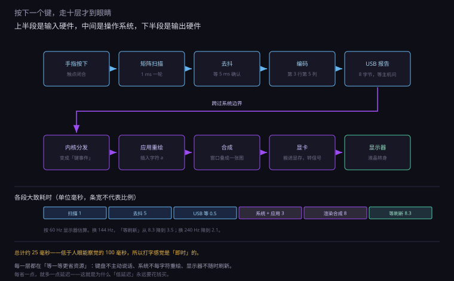
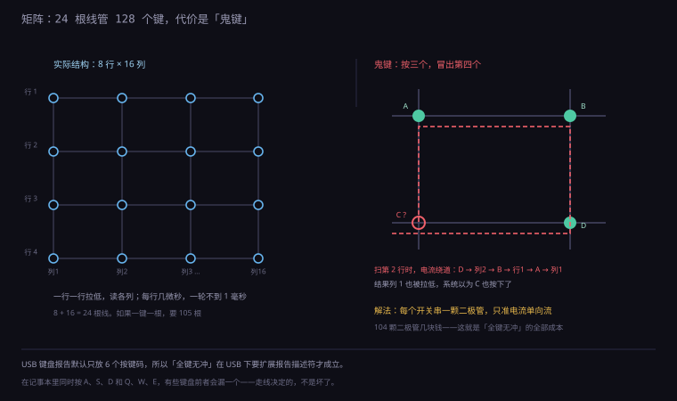
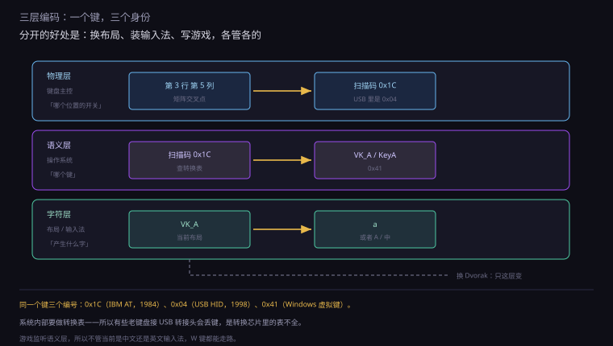
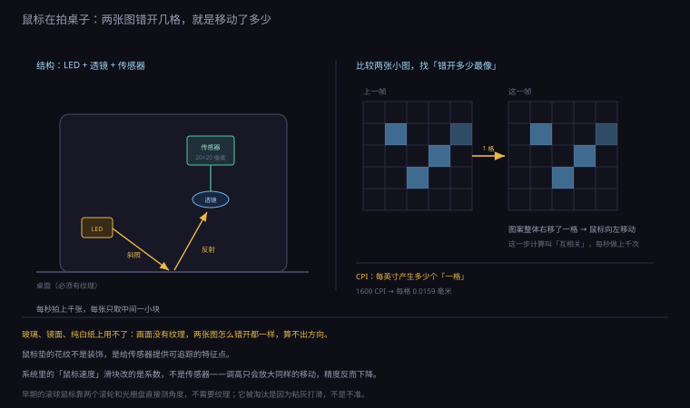
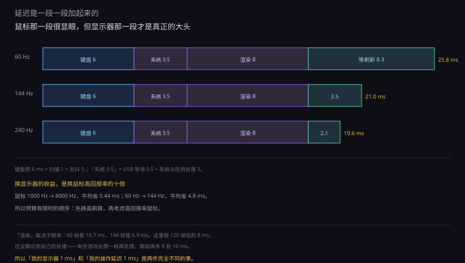
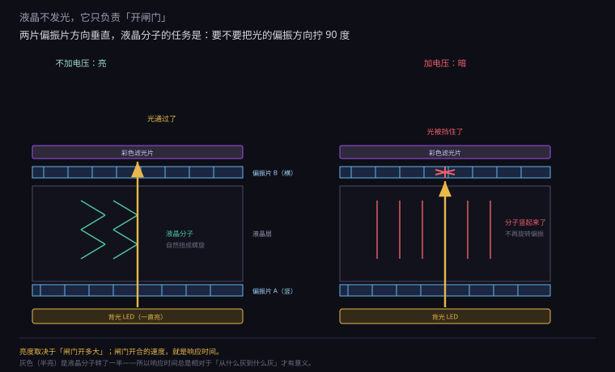
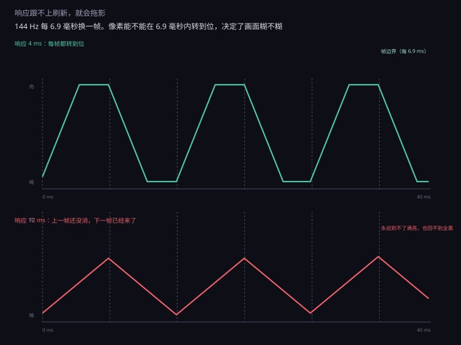

约 1.2 万字 · 7 张图 · 读完你能说清按下一个键到屏幕出现一个字经过了多少层、 为什么机械键盘要装二极管、以及 144 Hz 到底改善了什么
手指按下字母 A。键帽下面的塑料柱往下走两毫米， 压到一个橡胶碗（薄膜键盘）或者一根弹簧（机械键盘）， 底部的两片金属接触，电路接通。
这一瞬间，键盘里的那颗小芯片（主控）正以每秒上千次的频率扫描整个键位矩阵。 它发现「第 3 行第 5 列」通了，于是知道：A 被按下了。
但它不能立刻上报。因为金属触点在闭合的瞬间会弹跳—— 接触、断开、再接触，持续几毫秒。如果每次都上报， 按一下 A 会打出五个 a。所以主控要等一等，确认稳定了再上报。 这一步叫去抖。
确认之后，主控把这个位置翻译成一个编号（在 USB 里叫 usage code）， 打包成一个 8 字节的中断报告，等主机来问的时候交出去。
主机的 USB 控制器收到报告，交给操作系统内核。 内核的输入子系统把它翻译成「某个键按下」这个事件， 再往上送。窗口系统（Windows 的 win32k、Linux 的 X/Wayland、macOS 的 Core Graphics） 判断这个事件该给哪个窗口——是当前焦点那个。
应用收到「A 键按下」，决定在光标处插入字符 a。 它调用系统的文字绘制接口，把 a 画进自己的缓冲区， 然后告诉系统「这块区域脏了，重画一下」。
系统的合成器（Windows 的 DWM、macOS 的 WindowServer） 把这一层窗口和桌面合成一张图，交给显卡。 显卡把这张图从内存搬到显存，转换成分辨率对应的信号， 通过 HDMI 或 DP 送出去。
显示器收到信号，逐行扫描：每个像素的三色子像素根据数值改变透光率， 背光穿过去，你就看到了那个 a。
整条链走完，快的话几十毫秒，慢的话两三百毫秒。 人眼能察觉的延迟大约在 100 毫秒以上——超过这个数， 打字就会有「粘手」的感觉。
「延迟几十毫秒」这句话，靠什么量？ 软件测不了——因为软件自己也在等，它不知道你什么时候按的。
所以要用外部设备。常见的有两种：
一、高速相机。用每秒一千帧的相机同时拍「手指按下」和「屏幕变化」。 两件事发生在第几帧，一减就是延迟。精度 1 毫秒，但设备贵、操作麻烦。
二、光电传感器 + 微控制器。一个光敏电阻贴在屏幕上， 一个触点接在鼠标按键上。按下时记录时间，屏幕变亮时再记录一次。 两个时间差就是延迟。这套东西几百块就能搭，是评测机构的常用做法。
要注意的是，不同游戏、不同设置，延迟差别很大。 同一个显示器，开垂直同步会多等一帧，开三重缓冲又多等一帧， 分辨率高、画质高又多等几帧。所以「显示器延迟 3 毫秒」指的是面板本身， 不是你的整机延迟。

上面每一步都在等。键盘等主控扫描，主控等主机来问， 主机等操作系统调度，应用等下一次重绘，显示器等下一帧刷新。 这些「等」加起来，就是延迟。
有意思的是，这些等待里有一半是为了省资源。 键盘不主动说话（USB 是主从），主机不每秒问一千次（省 CPU）， 应用不每来一个字符就重绘整个屏幕（省显卡）， 显示器不随时刷新（省带宽）。 每省一点，就多一点延迟。
所以「低延迟」从来不是免费的。游戏鼠标标 8000 Hz 回报率， 代价是 CPU 每秒被中断八千次；显示器标 360 Hz， 代价是带宽翻六倍。买高刷、买高回报率，本质是花钱买「少等一会儿」。
最直接的做法是「一个键一根线」。104 个键就要 104 根线， 加上公共端，一共 105 根。这个方案在工程上是灾难： 排线粗、焊点多、主控要有 104 个引脚。
所以键盘用了一个很聪明的办法：把它们排成矩阵。
把键分成 8 行、16 列。每个键放在一个交叉点上， 按下时把那一行和那一列接通。主控只需要 8 + 16 = 24 根线， 就能管 128 个键。
扫描的过程是这样的：主控依次把每一行拉低（或者拉高）， 然后读所有列的电平。如果第 3 行拉低时，第 5 列读到低电平， 就说明「第 3 行第 5 列」这个键被按下了。
一轮扫描 8 行，每行几微秒，整轮不到 1 毫秒。 所以键盘的「扫描率」通常是 1000 Hz 甚至更高—— 比你按键快得多，不会漏。

因为矩阵有一个天然的毛病：它分不清「真的按了」和「电流绕路了」。
这就是下一节要讲的鬼键。先说结论：便宜的键盘用矩阵不加二极管， 所以同时按某些组合会出错；贵的键盘每个键加一颗二极管， 让电流只能单向流，就能做到「全键无冲」。
矩阵是「怎么读数」的问题，开关是「怎么产生信号」的问题。后者分三代。
薄膜（最常见）。三层塑料片：上层印导电线路， 中间一层开孔，下层也印线路。按下时上下两层通过中间那个孔接触。 手感来自一个橡胶碗，按下去「噗」一下弹回来。 便宜、防泼溅、但手感模糊，按久了橡胶会老化变硬。
机械。每个键一个独立的轴体，里面有弹簧和金属簧片。 按下时簧片接触，产生信号。手感清晰、寿命长（5000 万次以上）、 可以换轴。代价是贵、重、声音大。
光轴 / 磁轴。没有金属触点。光轴是「按下时挡住一束红外光」， 磁轴是「按下时改变磁场，霍尔传感器读数」。 因为不接触，所以不磨损、不抖动，也就不需要去抖。 还能做到「按多深触发」可调——这就是「模拟输入」。
| 薄膜 | 机械 | 光轴 / 磁轴 | |
|---|---|---|---|
| 触发方式 | 两层导电膜接触 | 金属簧片接触 | 遮光 / 磁场变化 |
| 寿命 | 几百万次 | 5000 万次 | 1 亿次以上 |
| 要去抖吗 | 要 | 要 | 不要 |
| 手感 | 绵软 | 清晰、可选 | 线性、可调触发点 |
| 价格 | 几十块 | 几百块 | 上千 |
金属触点闭合的瞬间，不是「啪」一下接通，而是「啪啦啪啦」抖几下。 因为金属片有弹性，撞上去会弹回来，再撞，再弹。 这个过程持续 5 到 20 毫秒，期间电路通断几十次。
如果主控每次都上报，你按一下 A，屏幕上会出现一串 a。 所以必须去抖。
去抖的办法有三种，成本依次上升：
一、软件延时。检测到电平变化后，等 5 毫秒再读一次。 还是按下的状态，才算真的按下。这是最常用的做法，几乎不花钱。 代价是每个键多 5 毫秒延迟。
二、硬件 RC 滤波。在电路上并一个电容， 让电平变化变缓，抖动被电容「吸收」掉。 成本几分钱，但会让响应变慢一点。
三、 Schmitt 触发器。用带迟滞的比较器， 只有电压越过上下两个不同阈值时才翻转。 抖动幅度不够大就翻不过去，天然免疫。成本最高，效果好。
机械键盘的厂商特别喜欢宣传「去抖算法」。 宣传得没错——去抖时间设长了（比如 10 毫秒），键盘就「钝」； 设短了（2 毫秒），可能双击。 这是一场「稳定」和「跟手」的拉锯，没有完美解。
从「按下第 3 行第 5 列」到「屏幕上出现 a」，中间要过三道翻译。 这三层分工明确，而且每一层都可以单独换—— 这就是为什么你能用同一把键盘打英文、中文、俄文，甚至换成 Dvorak 布局。
| 层 | 这一层说的是什么 | 谁负责 | 例子 |
|---|---|---|---|
| 物理 | 哪个位置的开关闭合了 | 键盘主控 | 第 3 行第 5 列 |
| 语义 | 哪个「键」被按了 | 操作系统 | VK_A / KeyA |
| 字符 | 该产生什么文字 | 输入法 / 布局 | a、A、中、ф |
这三层分离的好处，怎么强调都不过分。
第一，换布局不用换键盘。你在系统里把键盘设成 Dvorak， 物理上还是那把键盘，按同一个位置，出来的字符变了。 因为「语义层」到「字符层」的映射被改了。
第二，输入法可以插在中间。中文输入法做的事， 就是拦截「语义层」的事件，攒几个字母，再吐出汉字。 它根本不需要知道你是用薄膜键盘还是机械键盘。
第三，游戏可以只关心「键」不关心「字」。 W 键往前走，跟当前是英文还是中文输入法完全无关—— 游戏监听的是语义层。这也是为什么游戏里打字要切输入法，但走路不用。
这个问题跟技术关系不大，跟历史关系很大。
最早的打字机是机械的：按下一个键，一根金属杆弹起来，打到色带上， 在纸上留下字。如果两个相邻的键连着按，两根杆可能卡在一起。 所以设计者把常用的字母对拆开，故意排得别扭，让杆不容易相撞。
1873 年，这个布局被 Remington 公司采用，随打字机卖遍全世界。 然后一百五十年过去，打字机没了，布局留下来了。 这就是「路径依赖」——不是因为它好，是因为用的人太多，改不动了。
1936 年，Dvorak 提出了一个更省力的布局：把最常用的字母放在中排， 左右手交替更均衡。研究显示它能减少手指移动距离三到五成。 但它没流行起来，因为全世界已经会打字的人都得重新学。
中文用户其实没这个包袱——我们用拼音，键盘只是「输入字母的工具」， 打的是 a、o、e，不是英文单词。 所以中文输入法的键位设计，反而可以更自由。
如果你看过键盘的底层数据，会发现编号长得莫名其妙： A 键的扫描码是 0x1C，在 USB HID 里是 0x04， 在 Windows 的虚拟键码里是 0x41。
三个完全不同的数，指的是同一个键。原因很简单： 它们属于三个不同的时代、三套不同的标准。
系统内部要做一层转换表。这也是为什么有些老键盘接 USB 转接头会出怪问题—— 转换芯片里的表不全，某些键就丢了。

现在说矩阵的那个毛病。它很具体，可以画出来看。
假设矩阵是这样的：行线横着走，列线竖着走，每个交叉点一个开关。 主控把第 1 行拉低，读各列。
如果你同时按住三个键：(行1,列1)、(行2,列2)、(行1,列2)。 主控扫描第 2 行时，第 2 行被拉低。 电流的路径是：第 2 行 → (行2,列2) 的开关 → 列 2 → (行1,列2) 的开关 → 第 1 行 → (行1,列1) 的开关 → 列 1。
结果：列 1 也被拉低了。主控以为 (行2,列1) 也被按下了。 这个凭空冒出来的键，就是鬼键（ghost key）。
为什么会这样？因为电流可以倒着流过别的开关。 开关是双向导通的，它不认方向。
解决办法很优雅：给每个开关串一颗二极管。 二极管只允许电流单向通过，绕路的电流走到一半就被挡住了。 一颗二极管几分钱，104 个键就是几块钱——这就是「全键无冲」的成本。
所以键盘广告上那句「全键无冲」（NKRO），翻译过来是： 我们每个键都装了二极管。没有别的魔法。
| 方案 | 二极管 | 能同时按几个 | 典型产品 |
|---|---|---|---|
| 普通薄膜矩阵 | 无 | 2–3 个，特定组合会冲突 | 办公键盘、笔记本键盘 |
| 分区矩阵 | 无，但把常用键分开 | 常见游戏键不冲突 | 游戏薄膜键盘 |
| 全键无冲 | 每键一颗 | 全部 104 键 | 机械键盘 |
还有一个细节：就算键盘支持全键无冲，USB 也不一定传得过去。 USB 的键盘报告默认只有 8 个字节，其中 6 个字节放按键码—— 也就是最多同时报 6 个键。想报更多，要用「报告描述符」扩展， 或者用多个报告。 所以有些键盘标「全键无冲」，但只在 PS/2 接口下成立，USB 下只能 6 键。
鼠标的原理，一句话就能说完：它在连续拍桌子，然后比较两张照片。
拆开一个光学鼠标，会看到一颗很小的图像传感器， 前面有个透镜，把桌面放大成像。传感器每秒拍几千张 （早期的 1500 张，现在上万张），每张只有 20×20 像素左右， 而且只对红外光敏感。
然后一颗 DSP 做一件事：比较这一张和上一张，算出图像往哪个方向移了几个像素。 这个计算叫「互相关」——把两张图错开各种位置叠一下，找最像的那个偏移。
算出来的偏移量，就是鼠标移动的距离。乘以一个系数， 变成屏幕上光标的位移。

因为「比较两张图」这件事有个前提：画面必须有纹理。
在纯色玻璃、镜面、纯白纸上，两张图长得一模一样， 错开多少格都一样像，算不出方向。鼠标就会「飘」或者干脆不动。
所以鼠标垫的花纹不是装饰，是给传感器提供「可追踪的特征点」。 玻璃桌上垫一张纸就能用，是因为纸有纤维纹理。
早期的机械鼠标（滚球）不需要纹理，它靠两个滚轮和光栅盘直接测角度。 但滚球会粘灰、会打滑、要清理。光学方案胜出的原因不是更准，是更省事。
还有一类「激光鼠标」，用的是激光二极管而不是红外 LED。 激光的相干性好，能在更多表面上成像（包括光滑的木头）， 但对某些表面反而更差（比如透明玻璃）。现在主流是「红外 LED + 高帧率」，不是激光。
鼠标移动靠传感器，点击和滚动靠另外两样东西。
按键下面是一个「微动开关」。一小块塑料壳， 里面一片弯曲的铜片。按下时铜片翻转，撞到触点，发出「咔」一声。 翻转是突变的，所以手感干脆；但也因为突变，它同样会抖—— 微动开关也要去抖。
微动的寿命用「次」标：常见 2000 万次，好的 5000 万次。 但「寿命到了」不是完全坏掉，而是触点氧化、弹簧疲劳， 变成「单击变双击」或者「按下去没反应」。 这是鼠标最常见的故障，也是「换个微动就能修好」的原因。
滚轮有两代。机械式是一个带栅格的轮子， 两侧有红外对管，滚一格挡一次光，产生一个脉冲。 手感是「哒哒哒」，一格一格。光栅式是一圈细密的光栅， 分辨率更高，但手感是滑的。
还有一种「无阻尼滚轮」（比如某些办公鼠标），按一下切换成自由滚动， 里面是一个电磁离合。刷长文档很爽，打游戏容易误触。
鼠标广告上堆着一串数字：16000 CPI、8000 Hz 回报率、0.125 毫秒延迟。 这些数字各自管什么，值不值得买，值得算一遍。
CPI 的意思是「每英寸多少个计数」。1600 CPI 的鼠标， 在桌面上移动 2.54 厘米，会向电脑报告 1600 次「我动了」。 换成距离：每个计数对应 0.0159 毫米。
这个数字决定的是分辨率，不是灵敏度。 就像一把尺子，刻度越细，能量得越准。 但刻度再细，你手抖一毫米还是会抖一毫米——CPI 提高不会让你的手更稳。
那为什么电竞鼠标标 26000 CPI？因为高 CPI 可以在降低系统灵敏度的同时保留精度。 26000 CPI 的鼠标配 0.1 的系统灵敏度，等效于 2600 CPI 配 1.0， 但前者能捕捉到更细的移动。不过到了这个量级，人的手已经感觉不出差别了。
鼠标也是 USB 设备，也是「主机来问，设备才答」。 回报率就是「每秒被问多少次」：
| 回报率 | 间隔 | 典型场景 |
|---|---|---|
| 125 Hz | 8 ms | 办公鼠标、老式无线鼠标 |
| 500 Hz | 2 ms | 普通游戏鼠标 |
| 1000 Hz | 1 ms | 主流电竞鼠标 |
| 4000 Hz | 0.25 ms | 高端电竞 |
| 8000 Hz | 0.125 ms | 旗舰，需要高刷屏配合 |
看起来很美好：从 125 Hz 提到 1000 Hz，延迟从 8 毫秒降到 1 毫秒， 少了 7 毫秒。但这里有一个常被忽略的事实——
鼠标的延迟只是整条链的一小段。 从你动手到看见结果，中间还有：
最后一项是大头。60 Hz 显示器平均要等 8.3 毫秒， 144 Hz 是 3.5 毫秒，240 Hz 是 2.1 毫秒。
算一下：鼠标从 1000 Hz 换到 8000 Hz，省了 0.44 毫秒（平均）。 显示器从 60 Hz 换到 144 Hz，省了 4.8 毫秒。 换显示器的收益是换鼠标的十倍。
这不是说高回报率没用——它确实减少了一部分延迟， 而且在高刷屏上能让光标轨迹更平滑。 但如果预算有限，顺序应该是：先换高刷屏，再考虑高回报率鼠标。
无线鼠标曾经是「办公用品」的代名词，延迟高、会卡顿。 现在电竞选手大量用无线，靠的是协议换掉了。
蓝牙是最通用的方案，但它的设计目标是「省电 + 兼容」， 不是低延迟。蓝牙的回报率通常只有 125 Hz，加上连接间隔和重传， 实际延迟能到 7 到 30 毫秒。打字够用，打游戏不行。
2.4 GHz 私有协议（各家叫法不同，罗技叫 Lightspeed） 用的是自己的无线芯片和跳频算法，不遵守蓝牙那套规矩。 回报率能做到 1000 Hz 甚至 8000 Hz，延迟压到 1 到 2 毫秒。
代价是要插一个专用接收器，而且一台电脑一个。 这就是为什么电竞无线鼠标都有一个 USB 小方块。
还有一条容易被忽略：接收器的位置。 插在机箱后面，中间隔着金属机箱和一米空气，信号会弱。 插在前置口或者用一根延长线拉到桌面，稳定性明显不一样。 很多「无线鼠标偶尔卡一下」的问题，挪一下接收器就好了。

显示器是这一节里唯一「你能看见物理过程」的设备。 凑近看屏幕，能看到一个个小方格；用放大镜看， 每个方格里有红绿蓝三条竖纹。那就是子像素。
但液晶本身不发光。它只做一件事：控制光能不能通过。
结构是这样的，从后往前：
关键在于第 3 层。不加电压时，液晶分子自然扭成螺旋， 光穿过它时偏振方向被旋转了 90 度——正好对上第二片偏振片，光通过，这个子像素亮。
加上电压时，液晶分子竖起来，不再旋转偏振方向—— 光被第二片偏振片挡住，这个子像素暗。
所以「液晶显示」的本质是用电压控制一道闸门。 亮度取决于闸门开多大，而闸门的开合速度，就是「响应时间」。

每个像素由红绿蓝三个子像素组成，但它们的排列方式不止一种。
RGB 竖条纹是最常见的：三个细长条并排。 好处是文字边缘可以做「次像素渲染」——系统知道每个子像素的位置， 可以用相邻像素的子像素来补足边缘，让字看起来更锐利。 Windows 的 ClearType、macOS 早期的字体平滑，都是这么做的。
Pentile 是 OLED 常用的排列：绿色子像素多，红蓝少。 因为人眼对绿色最敏感，用绿色「借」给红蓝，能在同样分辨率下省三分之一的子像素。 代价是白色细线边缘会有彩色毛边，文字不如 RGB 排列锐利。
RGBW 多加了一个白色子像素，用来提亮度。 但这会让「一个像素」变成四份，实际彩色分辨率下降。 电视上常见，显示器上少见。
每个子像素背后有一个薄膜晶体管（TFT），负责保持这个像素的电压。 一块 4K 屏有 3840 × 2160 × 3 = 2488 万个子像素， 也就有两千多万个晶体管。
这么多晶体管，制造时难免有几个是坏的。 坏法有两种：常亮（亮点）和常暗（暗点）。 行业标准允许一定数量的坏点，比如「不超过 3 个」。 所以「完美屏」是个卖点，因为它意味着这块面板运气好。
液晶的所有麻烦，都来自「它自己不发光」——需要背光、需要偏振片、 需要挡光，所以黑不下去、响应慢、还漏光。
OLED 干脆去掉背光：每个像素自己发光。 要黑就关掉，黑得彻底（对比度理论上无限）；关得快，响应 0.1 毫秒。 这是液晶做不到的两件事。
代价也很清楚：
mini-LED 是中间路线：还是液晶，但把背光从「一整片」 换成「几千颗小 LED，分区控制」。要黑的地方直接关掉那一区的背光。 对比度能到几十万比一，接近 OLED，但没有烧屏问题。 代价是「光晕」——黑底白字时，字周围会有一圈淡淡的光，因为背光分区不够细。
| 普通液晶 | mini-LED | OLED | |
|---|---|---|---|
| 对比度 | 1000:1 | 十万比一 | 理论无限 |
| 响应 | 1–10 ms | 1–10 ms | 0.1 ms |
| 烧屏 | 不会 | 不会 | 会 |
| 缺点 | 黑不下去、漏光 | 光晕、厚 | 贵、亮度受限 |
液晶分子的排列方式不同，就有了三种主流面板。 它们的差别不是「好和坏」，是「三种不同的妥协」。
| TN | IPS | VA | |
|---|---|---|---|
| 液晶排列 | 扭曲向列 | 平面转换（水平旋转） | 垂直排列 |
| 对比度 | 1000:1 | 1000:1 | 3000:1 以上 |
| 可视角度 | 差（上下最明显） | 很好，178° | 中等 |
| 响应速度 | 最快，1 ms | 中等，4 ms | 慢，暗部拖影明显 |
| 色彩 | 一般，6 bit 居多 | 好，8/10 bit | 好，8 bit |
| 典型用途 | 电竞、便宜显示器 | 设计、办公、主流 | 影音、曲面屏、电视 |
这张表里最值得说的是「对比度」和「响应速度」是一对冤家。
VA 的液晶分子竖着排，遮光能力强，所以黑色很黑（对比度 3000:1 以上）。 但也因为要转 90 度，转动距离长，速度就慢—— 尤其是从黑变灰的时候，慢到肉眼能看出「拖影」。
IPS 的分子水平旋转，转动距离短，速度快一些； 但水平排列的遮光能力差，黑色发灰（对比度 1000:1）， 而且背光容易从边缘漏出来（「漏光」）。
TN 最快最便宜，但视角一偏颜色就变——这就是为什么老笔记本稍微歪一点看，屏幕就发白。
IPS 漏光是黑屏时四角发白。很多人以为是坏了， 其实它是结构决定的：液晶本身不发光，靠背光； 背光要从边缘或背后照进来，而 IPS 的分子水平排列，挡光能力弱， 边框一圈压不紧，光就漏出来了。 所以「漏光」是程度问题，不是有无问题。全黑房间里看黑屏， 几乎没有一块 IPS 是完全均匀的。
曲面屏的弧度用「曲率」表示，比如 1500R 意思是 「半径 1.5 米的圆」。数字越小越弯。 1500R 大概相当于你坐在 1.5 米处，屏幕各点到眼睛的距离相等。
曲面的好处是「沉浸感」和「边缘视角一致」，主要针对 32 寸以上的大屏。 缺点是：看直线会弯（做设计不合适）、 多屏拼接难对齐、便宜的曲面（比如 1800R 以上）其实跟平面差别不大。
一句话：27 寸以下不需要曲面，32 寸以上才值得考虑。
这两个概念经常被混为一谈，其实说的完全是两件事。
刷新率是「屏幕每秒换几张图」，单位赫兹。 60 Hz 就是每 16.7 毫秒换一张，144 Hz 是 6.9 毫秒，240 Hz 是 4.2 毫秒。 它由显示器的控制电路决定。
响应时间是「一个像素从一种颜色变到另一种要多久」，单位毫秒。 它由液晶分子的转动速度决定。 它是物理的，改不了。
两者不匹配，就会出现拖影： 如果刷新率是 144 Hz（6.9 毫秒一帧），而像素响应要 10 毫秒， 那么下一帧来了，上一个像素还没转到位——画面就糊了。

这个问题值得算清楚，因为它经常被神秘化。
假设你在移动鼠标。屏幕每 16.7 毫秒（60 Hz）才更新一次， 那么你看到的画面，平均滞后于真实位置 8.3 毫秒。 144 Hz 时滞滞后 3.5 毫秒，240 Hz 时 2.1 毫秒。
这个滞后不是「卡」，是「延迟」。它让你的手和眼之间多了一层时差。 高刷减少的就是这个时差。
还有一个副作用：高刷让运动更平滑。 因为两帧之间的位移更小，人眼更容易把它们连成连续的运动。 这就是为什么「60 Hz 和 144 Hz 摆在一起，一眼就能看出差别」—— 不是因为 144 更清楚，是因为它更连贯。
这两个词经常混着用，但成因完全不同，解法也不同。
拖影是显示器的问题：像素转身慢， 上一帧的残影还没消，下一帧已经来了。换响应更快的面板能解决。
动态模糊是人眼的问题：一个物体快速移动时， 它在视网膜上留下一条轨迹。哪怕显示器每帧都完美， 人眼还是会把它们连成一片糊。换面板解决不了。
解法是插黑帧（黑帧插入）：在每两帧之间插一张全黑的图， 让人眼「清空」一次，轨迹就断了。 代价是亮度下降、可能闪烁。 这就是显示器里那个「ELMB」「ULMB」「DyAc」之类的开关在干的事。
所以「为什么高刷看起来更清楚」有两层原因： 一是帧更密，位移更小；二是很多高刷屏默认开了插黑或类似技术。 不是单纯因为「Hz 数大」。
最后三件事，都是买显示器时绕不开的。
色域是一块「能显示的颜色范围」。常见的有三个标准：
| 标准 | 覆盖 CIE 1931 | 为谁定的 |
|---|---|---|
| sRGB | 约 35% | 1996 年的通用标准，网页和 Windows 默认 |
| DCI-P3 | 约 45% | 电影放映，比 sRGB 更红更绿 |
| Adobe RGB | 约 50% | 印刷，青色和绿色范围更大 |
| Rec.2020 | 约 76% | 4K/8K 电视，目前几乎没有屏能全覆盖 |
问题出在「内容按 sRGB 做的，屏幕按 P3 显示」。 一个 sRGB 定义的红 (255,0,0)，在 P3 屏上会用更饱和的红来显示—— 结果就是「过艳」：红色发荧光，人脸发橙。
解决办法是色彩管理：系统要知道这块屏的色域， 然后把 sRGB 的内容做一次映射，压缩到 sRGB 的范围再显示。 Windows 的色彩管理一直是短板，所以广色域屏在 Windows 上经常「太艳」； macOS 做得早，所以同样一块屏在 Mac 上就正常。
8 bit 每个通道 256 级，三个通道组合出 1677 万种颜色。 10 bit 每通道 1024 级，组合出 10.7 亿种。
听起来 10 bit 是 64 倍，应该明显更好。但实际观感差别很小， 因为人眼对渐变的敏感度有限。 真正能看出来的场合是「大面积平滑渐变」—— 比如天空、雾、纯色背景，8 bit 会出现一条条「色带」，10 bit 不会。
还要注意「真 10 bit」和「8 抖 10」（FRC）的区别： 后者靠快速闪烁两种相邻颜色来模拟中间色，静态看没问题， 拍视频或者快速移动时可能看出来。
HDR（高动态范围）经常被宣传成「画面更鲜艳」，其实它解决的是另一个问题： 真实世界的亮度跨度太大，普通屏幕装不下。
阴天的天空大约 2000 尼特，室内的白墙约 100 尼特， 夜晚的街角可能只有 0.1 尼特。跨度两万倍。 普通 SDR 屏幕只能显示 0.5 到 300 尼特，跨度 600 倍—— 所以要么天空过曝成一片白，要么暗部糊成一团黑。
真 HDR 要同时满足四个条件：
四个条件缺一个，效果就打折。市面上大量「支持 HDR」的显示器， 其实只是「能解码 HDR 信号」，亮度只有 300 尼特、没有分区背光—— 这种「假 HDR」看起来还不如关掉 HDR，因为片子被硬压进一个小范围， 反而发灰。
| 标准 | 特点 | 谁在用 |
|---|---|---|
| HDR10 | 静态元数据，全片一套参数 | 最普及，蓝光和流媒体 |
| HDR10+ | 动态元数据，逐场景调 | 三星、亚马逊 |
| Dolby Vision | 动态元数据 + 12 位，需授权 | 影院、高端电视 |
| HLG | 为广播设计，兼容老设备 | 电视台、直播 |
分辨率本身没有意义，像素密度（PPI）才有。 算法是：对角线像素数 ÷ 对角线英寸数。
27 寸 4K：√(3840² + 2160²) ÷ 27 = 4406 ÷ 27 ≈ 163 PPI。
27 寸 2K：2937 ÷ 27 ≈ 109 PPI。
24 寸 1080p：2203 ÷ 24 ≈ 92 PPI。
人眼在 60 厘米距离的分辨极限大约是 1 弧分，换算成屏幕上的距离约 0.18 毫米。 163 PPI 的像素间距是 0.156 毫米——比人眼极限还细，所以字会「太小」。 92 PPI 的间距是 0.276 毫米，看着舒服，但能看到像素颗粒。
这就是缩放存在的原因。150% 缩放后，27 寸 4K 的逻辑分辨率变成 2560×1440， 等效 PPI 降到 109——既清楚，又不会太小。
最后把这一节讲的东西收成一张表。买的时候看这几项，基本不会踩坑。
| 设备 | 看什么 | 够用 | 讲究 |
|---|---|---|---|
| 键盘 | 开关类型 | 薄膜，几十块 | 机械 / 光轴，手感与寿命 |
| 无冲 | 分区无冲即可 | 全键无冲（每键一颗二极管） | |
| 鼠标 | CPI | 800–1600 | 更高 CPI + 低系统灵敏度 |
| 回报率 | 500–1000 Hz | 4000–8000 Hz（需高刷屏配合） | |
| 显示器 | 面板 | IPS，60 Hz | 高刷 IPS / VA / OLED |
| 分辨率 | 1080p（24 寸） | 2K（27 寸）/ 4K（27 寸 + 150% 缩放） |
注意表里没有「越大越好」这种话。每一项都是取舍： 高刷要显卡喂得满，高分辨率要缩放跟得上，广色域要色彩管理配得齐。 单看一个参数买到的东西，往往在别处缺一块。
把这一节压缩成六句话：
1. 矩阵扫描 → 去抖 → 编码 → USB 报告 → 内核输入子系统 → 窗口系统分发 → 应用处理 → 合成器 → 显卡 → 显示器。
2. 为了少用线。8 行 × 16 列 = 24 根线管 128 个键；一个键一根线要 105 根。
3. 金属触点闭合瞬间会弹跳 5–20 毫秒，不去抖会一次按键报好几次。光轴/霍尔没有机械触点，不产生抖动。
4. 物理层说「哪个位置按下」，语义层说「哪个键」，字符层说「产生什么文字」。分开才能换布局、装输入法。
5. 电流可以倒着流过别的开关，绕出一条假通路。每个键串一颗二极管让电流单向，就能全键无冲。
6. 连续拍桌面小图，用互相关算两张图错开了多少像素。玻璃太光滑没有纹理，两张图一样，算不出位移。
7. 不是。CPI 是硬件固定的；系统滑块改的是系数，调高只会放大同样的移动，精度反而下降。
8. 亮。液晶分子自然扭曲 90 度，把偏振方向转到能通过第二片偏振片；加电压后分子竖起，光被挡住。
9. 刷新率是每秒换几张图（由电路决定），响应时间是像素变色要多久（由液晶决定）。响应跟不上刷新就拖影。
10. 约 163 PPI。像素间距 0.156 毫米，比人眼在 60 厘米处的分辨极限还细，字会太小，所以要放大 150%。